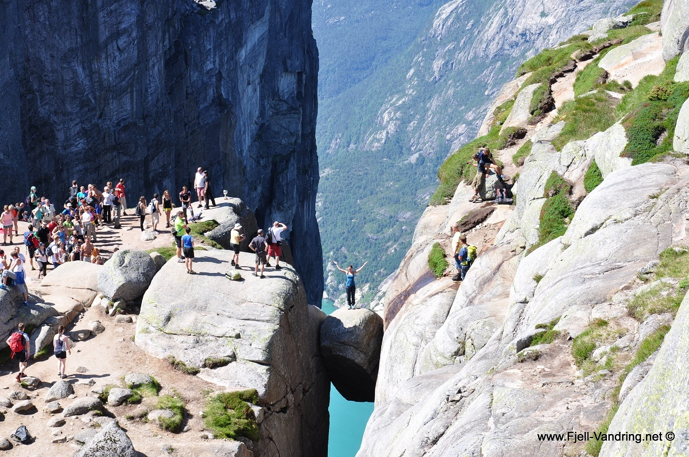

Norvegijos Gamta
Lankomiausios, zinomiausios vietos
Preikestolen
Preikestolenas, yra Norvegijos kalnas, esantis Lysefjordo regione. Tai yra viena iš pasaulio žinomiausių ir lankomiausių gamtos apsvarstymo vietų, kur apsilankantys turistai gali mėgautis vaizdu į 600 metrų gilų ir 600 metrų plokščią krioklį, per kurį teka fjordo vanduo
Šis kalnas yra lengvai pasiekiamas pėsčiomis, ir jo ekskursijai vidutiniškai reikia apie 4-5 valandas. Tai yra žinoma ir dėl saulėtekio ir saulėlydžio vaizdo, kuris padaro šią vietą nepamirštamu ir netikėtu gamtos patyrimu.
Nors tai yra viena iš populiariausių turistų lankomų vietų Norvegijoje, ją reikia apsvarstyti atsargiai, nes tai yra pavojinga vieta, ir apsilankantiesiems reikia būti pasiruošusiems jos apsilankymui. Todėl rekomenduojama laikytis kelionės patarimų ir būti atsargiems, kad galėtumėte mėgautis šios unikalios gamtos grožiu ir vaizdu.
KjeragBolten
Kjeragbolten yra akmuo, esantis Norvegijoje, Kjerag masive. Tai yra viena iš populiariausių ir drąsiausių turistų lankomų vietų, kur jie gali pasivyti nuostabų vaizdą į fjordą ir aplink esančią gamtą. Akmuo yra uždėtas ant kalno ir laikomas vienu iš pasaulio labiausiai nuostabių ir baisiausių vietų.
Norint pasiekti šią vietą, reikia nueiti kelių valandų taką ir būti pasiruošusiam užlipti laiptais. Tačiau atlygis už šias pastangas yra neįkainojama patirtis ir nuostabūs vaizdai.
Apsilankant šioje vietoje, rekomenduojama laikytis saugos reikalavimų ir naudoti saugos įrangą, nes tai yra baisi ir pavojinga vieta. Tačiau su atsargumu ir saugiai, tai gali būti viena iš labiausiai įsimintinų ir neįkainojamų kelionių.
Trolltunga
Trolltunga(Trolio Liezuvis) yra viena iš garsiausių ir lankomiausių turistų vietų Norvegijoje. Tai yra nuostabi natūrali formacija, kuri išsikiša iš uolos virš 700 metrų aukščio virš fjordo. Ši vieta suteikia nuostabius panoraminius vaizdus ir yra populiari tarp fotografų bei gamtos mėgėjų.
Norint pasiekti Trolltunga, reikia nueiti ilgą ir įdomią kelionę, kurios trukmė paprastai yra apie 10-12 valandų. Kelionė yra pakankamai sunki, tačiau ji yra verta, nes suteikia unikalų ir neįpareigojantį gamtos patyrimą.
Būtina atkreipti dėmesį, kad Trolltunga yra pavojinga vieta, ir reikia laikytis kelionės rekomendacijų ir būti atsargiems, kad išvengtumėte bet kokio pavojaus keliantis žalos. Taip pat rekomenduojama pasiruošti fiziškai ir turėti reikiamus įrankius ir aprangą, kad būtų galima mėgautis šia unikalia gamtos vieta.